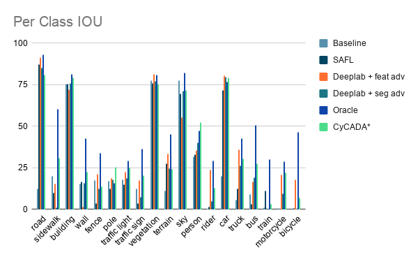
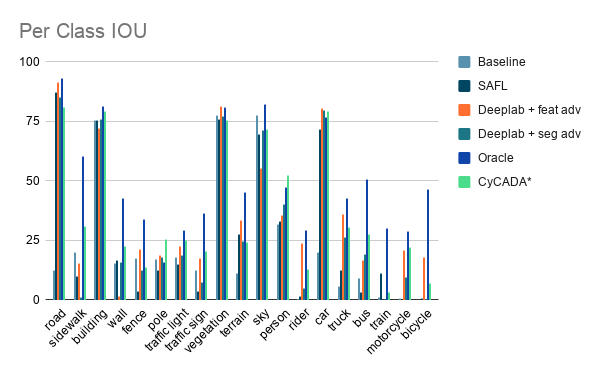

|
|
|
|
|
|
|
|
|
|
|
| We propose a novel domain adaptation method, SAFL for semantic segmentation. Assuming we only have access to ground-truth segmentation maps in a source domain, SAFL learns the features of the source (synthetic) and the target (real) domains in a supervised and self-supervised manner respectively. For self-supervised training, we use image reconstruction to learn the features of the target domain without ground-truth labels. Our experimental results show that the self-supervised training via image reconstruction in the target domain helps our method improve the mIoU score in semantic segmentation significantly. |
| Syn2Real is an approach to train a deep neural network (DNN) with only synthetic labeled images and optionally unlabeled real images. This approach is gaining popularity due to its potential ability to reduce the need of annotating large quantities of real images. It is especially beneficial for pixel-level tasks such as semantic segmentation and change detection, where labeling is the most time-consuming and labor-intensive. Another merit of Syn2Real is its ability to generate synthetic images diverse in weather and illumination conditions. This advantage, for instance, makes it easier for a trained model to deal with rare events like snow, rain, and fog in the field of autonomous driving. However, Syn2Real has a challenge of poor generalization to real images caused by the domain gap between real and synthetic images. To address this problem, many methods have been proposed in recent years such as unsupervised domain adaptation (DA), unsupervised representation learning, and learning from noisy or pseudo labels. Generally, unsupervised DA and representation learning train the network to make the feature distributions of the target and source domain closer. However, aligning the real (target) domain to the synthetic (source) domain distribution is an ill-posed problem because the real domain is significantly more complex and contains many more objects and nuisances. Learning from noisy labels is the latest approach in domain adaptation and achieves promising results. However, training with pseudo-labels can be unstable and often requires special tuning to avoid degeneration. To achieve stable training while maintaining high accuracy, we propose Self-Supervised Auxiliary Feature Learning (SAFL) --- a novel network architecture which learns domain adaptive features for semantic segmentation through the training of self-supervised image inpainting of unlabeled real images. We hypothesize that the task of self-supervised learning on real images acts as a strong regularizer for the network to perform well in both the source and target domains. To evaluate our method, we plan to conduct experiments of domain adaptive segmentation using the GTAV (synthetic) and Cityscapes (real) datasets. |
| Semantic segmentation is a crucial task for safe autonomous driving. The recent methods for semantic segmentation generally use an encode-decoder architecture like UNet or Deeplab and achieve increasingly higher accuracies with each new network architecture. However, there is a fundamental problem that there is a signficant financial cost to produce pixel-level segmentation annotations. This problem makes it challenging to produce a dataset with diversity in road types, weathers, and camera viewpoints. To solve this problem, semi-supervised semantic segmentation has been studied recently. Prior work of semi-supervised semantic segmentation makes use of adversarial learning, style transfer, pseudo-labeling. In this project, we investigate a novel way to learn features invariant to different domains. |
 |
| We show a high-level overview of SAFL in the figure above. The network architecture is really simple. SAFL is composed of four subnetworks: an encoder, a semantic segmentation decoder, an image inpainting decoder, and a discriminator. The encoder is based on the the ResNet-101 backbone and the decoder is based on the DeepLabV3 semantic segmentation architecture. During training, all images are fed into the encoder first, and then the encoded feature is given to two decoders to predict the semantic segmentation and image painting. The discriminator network is used to align the distributions of the features between the synthetic and real images. We plan to perform some ablation studies to show the effectiveness of SAFL: 1) Remove the discriminator, 2) Use 2D image reconstruction instead of image inpainting, 3) Use a different backbone network like ResNext or a Transformer 4) Train using additional in-the-wild city images. We aim to achieve state of the art results with our unified but simple method for adaptive semantic segmentation. |
|
In order to solve the task, the model has to implicitly learn about semantics and develop image features that are broadly useful. The encoder learns features from cityscape images in a self-supervised fashion by reconstructing it and the adversarial loss from the discriminator forces the network to learn features that can work in both synthetic and real domains. We formulate this task to adapt from GTA V data to Cityscapes data with the following loss function: $$L = \lambda_{seg} L_{seg} + \lambda_{rec} L_{rec} + \lambda_{adv} L_{adv}$$ where L_seg is the segmentation loss for synthetic data, L_rec is the reconstruction loss for the real images and L_adv is the adversarial loss from the discriminator. The different losses are weighted with hyperparameters \(\lambda_{seg}\), \(\lambda_{rec}\) and \(\lambda_{adv}\). |
|
For the reconstruction loss we use an L2 distance between the reconstructed image and target Cityscapes image. $$L_{rec} = ||F(x) - x||^2_2$$ |
|
We also add an adversarial loss on the feature space based on Generative Adversarial Networks. The discriminator takes image features as input and tries to classify them as real or synthetic. The goal is to learn features that are similar to real image features, so the discriminator is fooled. $$L_{adv} = ||D(z) – 1||^2_2$$where z is the image features, \(D\) is the discriminator. This least squares GAN loss is based on [ “Least Squares Generative Adversarial Networks.”] which observed that using binary cross entropy loss for generated images, which are very different from real images, can lead to vanishing gradients. |
Experiments |
 

|
Quantitative results |
| Class | Baseline | SAFL | Deeplab + seg adv | Deeplab + feat adv | Oracle | CyCADA* |
|---|---|---|---|---|---|---|
| road | 12.73 | 87.25 | 85.12 | 91.527 | 93.06 | 80.97 |
| sidewalk | 19.98 | 9.99 | 1.11 | 15.375 | 60.34 | 31.21 |
| building | 75.41 | 75.64 | 76.12 | 72.404 | 81.57 | 79.53 |
| wall | 15.32 | 16.85 | 15.95 | 1.696 | 42.85 | 22.41 |
| fence | 17.68 | 3.74 | 12.4 | 21.525 | 34.05 | 13.91 |
| pole | 16.99 | 12.6 | 17.86 | 18.886 | 15.97 | 25.53 |
| traffic light | 18.1 | 14.86 | 18.93 | 22.642 | 29.24 | 24.97 |
| traffic sign | 12.65 | 3.66 | 7.47 | 17.379 | 36.44 | 20.62 |
| vegetation | 77.83 | 76.1 | 77.27 | 81.499 | 81.1 | 75.61 |
| terrain | 11.43 | 27.57 | 24.65 | 33.558 | 45.25 | 24.47 |
| sky | 77.74 | 69.59 | 71.42 | 55.217 | 82.27 | 71.79 |
| person | 31.88 | 33.01 | 40.42 | 35.463 | 47.24 | 52.27 |
| rider | 0.17 | 1.57 | 4.99 | 23.984 | 29.44 | 12.84 |
| car | 20.01 | 71.88 | 79.62 | 80.481 | 76.93 | 79.54 |
| truck | 5.98 | 12.49 | 26.53 | 36.229 | 42.83 | 30.45 |
| bus | 8.98 | 3.23 | 19.07 | 16.913 | 50.64 | 27.75 |
| train | 1.37 | 11.29 | 0.19 | 0 | 30.36 | 3.18 |
| motorcycle | 0.73 | 0 | 9.63 | 20.736 | 29.02 | 22.2 |
| bicycle | 0.09 | 0.72 | 0.5 | 18.088 | 46.68 | 7.23 |
|
|
|
|
|
|
|